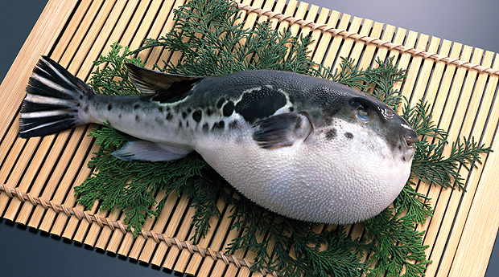

Рыба фугу

Описание
Рыба-фугу — знаменитый во всем мире японский деликатес, прославившийся
не только своим изысканным вкусом, но и разговорами о ее смертельной опасности.
Ингридиенты
- Рыба фугу
- Соль
- Соевый соус
- Лимонный сок/Уксус
- Зеленый лук/Дакон
Шаги приготовления
- Убедитесь, что вы используете фугу, купленную у надежного поставщика.
- Лицензированный повар должен удалить токсичные части (печень, яичники и др.) с помощью специальных ножей.
- Изготовление тонких ломтиков фугу требует мастерства и опыта.
- Обычно подают сырую (сашими) с соевым соусом, лимонным соком и гарниром (например, зеленым луком или дайконом).